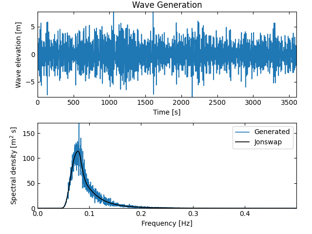
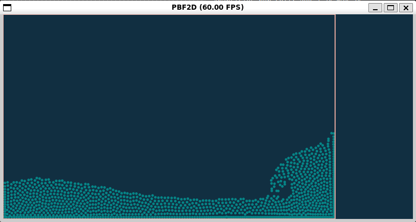
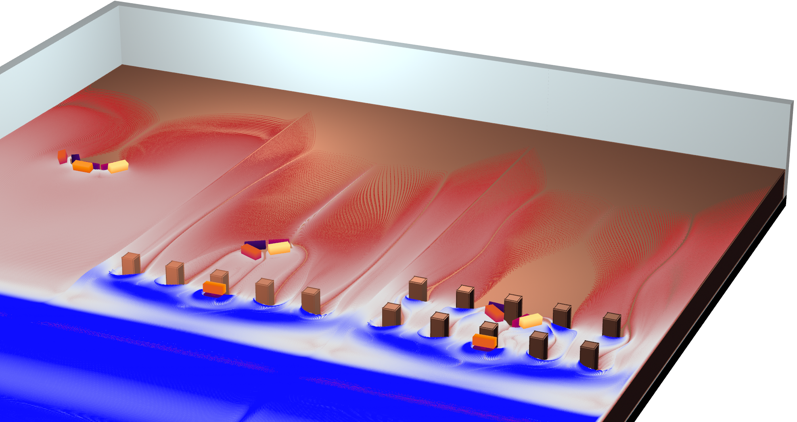
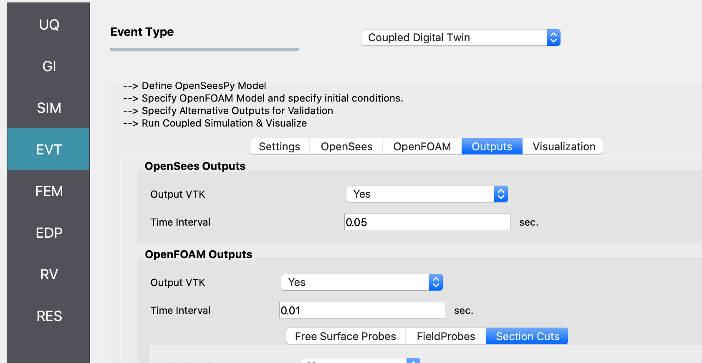
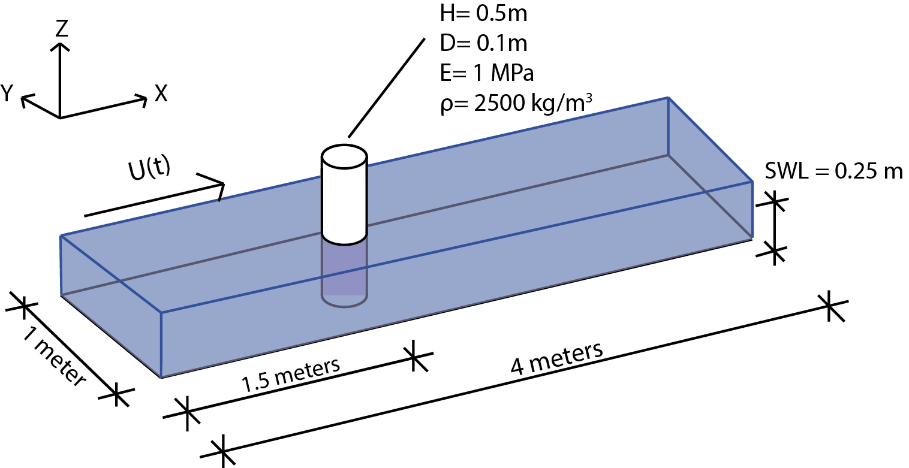

4. Examples
This local workflow example loads a simple OpenSees structure using waves from a generated, stochastic spectra (JONSWAP).

Forward sample a 2D wave maker piston's generated wave implemented in the high-performance Taichi Lang. The structure is a simple 1-story OpenSees frame structure. Engineering Demand Parameters are PFA, RMSA, PFD, and PID. The wave loading is generated using a stochastic wave spectra (JONSWAP). The wave loading is applied to the floors as lateral forces.

Forward sample a near-real time CelerisAi wave simulator. Replicates experiments on Seaside, Oregon, by Cox et al. 2008. Performed in Oregon State University's Directional Wave Basin.
This example uses the Material Point Method (MPM) running on GPUs to simulate the OSU LWF in 3D with debris.

This example uses the Material Point Method (MPM) running on GPUs to simulate the WU TWB in 3D with debris.

This example uses a coupled CFD - FEM simulation

This example uses a coupled CFD - FEM simulation
